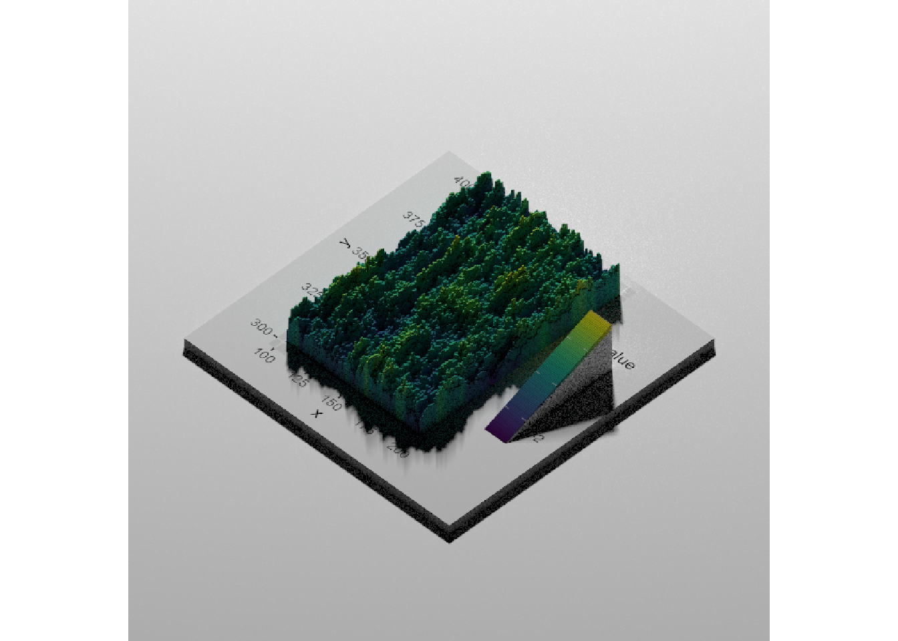

Warning: The `x` argument of `as_tibble.matrix()` must have unique column names if
`.name_repair` is omitted as of tibble 2.0.0.
ℹ Using compatibility `.name_repair`.
and the flat ggplot
gg2d <-ggplot(filter(actib_7_9, x >100& x <=200& y >300& y <400), aes(x = x, y = y, fill = value)) +geom_tile() + viridis::scale_fill_viridis(option ='viridis')gg2d
Rayshade version
There are a lot of arguments we can play with, but a simple default set works. Just have to remember to render_snapshot to see it.
plot_gg(gg2d)render_snapshot(clear =TRUE)
A few tweaks, but basically, that’s what we want- the tweaks needed for any particular plot will be plot-specific.
The flat_plot_render option is interesing, as it builds the typical heatmap as comparison.
plot_gg(gg2d, width =10, height =10, flat_plot_render =TRUE,# These are arguments passed to plot_3d, just playing aroundsolid =FALSE,theta =60,phi =30)render_snapshot()
There’s also a render_highquality too, Though that seems to need some tweaks to look right, both in the notebook or the Rstudio viewer.
plot_gg(gg2d)render_highquality(clear =TRUE)

Maps
I found some huge DEMs, but figure I should start smaller, so I chose a small area of the 10m Vic DEM.
I’d typically use stars, but the examples all use raster. Not sure it’ll work with stars.
Make it 3d- this is interesting. It takes the DEM as the second argument too, because the arguments are hillshade, which is generated by sphere_shade and heightmap, which is just the DEM.
Clip to the vicdem. This is a bit funny, because the streams_mville dataset from the ANAE is clipped to the Murray-Darling Basin, but the DEM is only partially in the basin, and so we lose some of it.
The streams don’t really show up well. Do they with a flat map? is it just that they’re too narrow to render well in 3d?
demgg_streams_mville
Can I make that with plot3d? I can’t get the extent argument to work without passing heightmap as well. Not sure why- they seem to both define the cropping extent.
Can I get it to work at all? Using almost exactly the example code, just modified for this dataset. Those are really wonky, and it’s not because of an issue with height- the roads were just given a length and width. I have to make the streams have huge linewidth to see them.
vicdem[[1]] |>height_shade() |>add_overlay(generate_line_overlay(streams_mville, color ='dodgerblue',extent =st_bbox(vicdem),heightmap = vicdem[[1]],linewidth =10)) |>add_overlay(generate_line_overlay(roads, color ='black',extent =st_bbox(vicdem),width =1080, height =1080)) |>plot_map()
So does this not work because the streams_mville just get lost? e.g. are they there, they just don’t show up?
The streams layer itself isn’t so bad when looked at alone. So somehow it’s sort of disintegrating when used as an overlay, whether with the gg method or not.